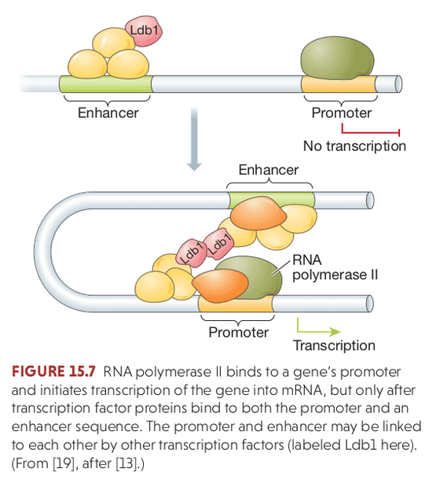

Fundamentals of Evolution
EEEB G6110
Session 9: Population Genetics
Today's topics
1. Quiz
2. Recap (contingency, development, molecular bio)
3. Segregation & recombination
4. Hardy Weinberg equilibrium
5. Genetic drift
6. Genealogical variation
Recap: contingency
The history of life is dependent upon the series of events that took place until that moment. Replaying the tape of life with slight alterations will result in different outcomes.
Example:
S.J. Gould wrote on the enormous influence of chance events like mass extinctions. Traits that affect the probability of survival of mass extinction do so in ways that are incidental and unrelated to the causes of their evolution in the first place.
Example:
The long term evolution experiment (LTEE) has studied adaptation of E. coli to a harsh environment over >60K generations. Frozen samples allow actually replaying the experiment from snapshots in the past. Seemingly neutral mutations at gen=20K can influence probability of adaptive mutations at gen=30K.
Recap: evolutionary development (evo-devo)
Proximate causes: mechanisms that operate within an individual organism to regulate development based on genetic and environmental signaling. e.g., programmed cell death causes the skin between digits to be lost in humans but not ducks.
Ultimate causes:
mechanisms that operate on populations over generations. e.g., natural selection. Explains how proximate causes evolve, by changes in allele frequencies
A major goal of evo-devo:
is to understand how genotypes influence phenotypes by linking ultimate and proximal causes.
Recap: modules and homology (evo-devo)
Modules:
distinct units that have genetic specifications, developmental patterns, locations, and interactions with other modules.
Embryology:
Studying the embryological development of living things provides clues to the evolution of present-day organisms. During some stages of development, organisms exhibit ancestral features in whole or incomplete form.
Homology:
is the existence of shared ancestry between a pair of structures, or genes, in different taxa. In development we can define modules with a shared developmental basis (often inferred through embryology) as serially homologous. Examples include the legs of centipedes, or vertebrae of the vertebral column. Additional differentiation of serially homologous structures is called individualization.
Recap: molecular biology
Genes are regions of the genome that are transcribed into RNA. The RNA may be functional itself, or serve as a template to encode a functional protein, in which case it is translated by ribosomes from 3-bp codons to amino acid peptides.

Recap: gene regulation
Population genetics
A mathematical and statistical framework for studying genetic differences within and between populations.
Hardy Weinberg Equilibrium
The Hardy–Weinberg principle (HW) provides the solution to one of Darwin's biggest mysteries: how variation is maintained in a population. HW shows that under Mendelian inheritance the frequencies of alleles (variants at a gene) will remain constant in the absence of selection, mutation, migration, and genetic drift.

Mendelian segregation and recombination
Haploid gametes formed during Meiosis inherit one of the two copies of each locus (in diploid organisms). The frequency of diploid genotypes can change over time (e.g., heterozygotes may be absent in parents but present in offspring), based solely on the random segregation of alleles.
If segregation is the only factor changing genotype frequencies then they will reach Hardy-Weinberg equilibrium after a single generation:
Hardy Weinberg Equilibrium
The three genotypes for a locus with two alleles will occur at: $p^{2} + 2pq + q^{2} = 1$.
Wright-Fisher Model
A discrete time model in which each generation is composed of 2N copies of each gene. Each subsequent generation 2N new copies are randomly drawn from the previous generation (note: this is type of Markov process model). For a gene with two alleles (A1 and A2) the probability of obtaining k copies of an allele that had frequency p in the last generation is:
$$ {{2N \choose k}p^{k}q^{2N-k}} $$
https://en.wikipedia.org/wiki/Genetic_drift#Wright.E2.80.93Fisher_model
Mendelian segregation and recombination
Segregation applies to the inheritance of allele copies at a single locus, whereas recombination affects whether copies at two different loci will be inherited together.

Linkage disequilibrium

Physical linkage
Linkage describes the probability that alleles at two or more positions in the genome will be co-inherited in gametes during Meiosis. It is a measurement of an individual genome, and is influenced by the physical distance separating the alleles (the number of nucleotides in the genome), and the genetic distance (variation in recombination rates across the genome). Loci very close together tend to be in linkage disequilibrium, while those on different chromosomes tend to be in linkage equilibrium. However, selection and recombination can affect this.
Linkage disequilibrium
Linkage disequilibrium (LD) describes the statistical association between alleles at two loci in a population, e.g., when an individual has A1 it also has B1. It is a measurement of a population and is influenced by the population history (e.g., selection, recombination), not an individual.
When a new mutation occurs the new allele only exists on the chromosome on which it evolved. It can be replicated and inherited in offspring, but will continue to occur only with the other alleles with which it is physically linked unless recombination breaks this association by crossover events that link it to other chromosomes with other alleles.
Recombination and Sex
Recombination re-shuffles variation among individuals in a population and can bring together beneficial alleles more quickly than in asexual populations.
Recombination and Sex
Recombination re-shuffles variation among individuals in a population and in doing so can disassociate (linkage equilibrium) beneficial from deleterious alleles.
Wright-Fisher Model
A discrete time model in which each generation is composed of 2N copies of each gene. Each subsequent generation 2N new copies are randomly drawn from the previous generation (note: this is type of Markov process model). For a gene with two alleles (A1 and A2) the probability of obtaining k copies of an allele that had frequency p in the last generation is:
$$ {{2N \choose k}p^{k}q^{2N-k}} $$
https://en.wikipedia.org/wiki/Genetic_drift#Wright.E2.80.93Fisher_model
Wright-Fisher Model
A neutral evolutionary process (no selection) can be modeled using the WF model in which allele frequencies change over time by genetic drift.

Source: Alexei Drummond
Wright-Fisher Model
A neutral evolutionary process (no selection) can be modeled using the WF model in which allele frequencies change over time by genetic drift.
Source: Alexei Drummond
Genetic Drift
Change in the frequencies of alleles in populations can occur even in the absence of selection. As we saw, the simple process of segregation (random drawing alleles) will draw populations towards HW equilibrium. Although we can compute an exact expected probability for genotype frequencies under HW, in reality sampling is a random process, and thus it may deviate from expectations due to sampling variance.

Genetic Drift
1. Allele frequencies fluctuate randomly as allele copies from the previous generation are randomly sampled each new generation.
2. Random fluctuations in alleles frequencies are larger in smaller populations. This is the law of large numbers, the outcome of many independent events will converge closer to the true probability with larger sample sizes.
3. Drift causes genetic variation to be lost. Fixation occurs when frequency of an allele reaches 0 or 1. There is no longer variation to sample in the next generation.
4. Drift causes populations that are initially identical to become different.
5. Alleles can become fixed by neutral drift without requiring selection.
The neutral theory of molecular evolution
Neutral theory proposes that most genetic variation and genetic differences among species are a result of genetic drift acting on selectively neutral alleles. Most mutations that are not deleterious are neutral rather than beneficial. It does not deny the action of natural selection in evolution, but states that beneficial alleles are very rare and thus contribute very little at the molecular level to explaining genetic variation.
The neutral theory of molecular evolution
Neutral theory provides a null model for understanding population genetic variation. It justifies the use of Wright-Fisher like mathematical equations to infer evolutionary history, e.g., phylogenies, population size changes, migration rates, mutation rates, etc.